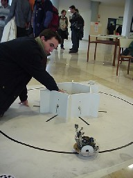

Bartolo
| Batán
| Coloso
| Fénix
| Gustabot
| Niko
| Otilio
| Sauromón
| Vigilante
| Zorrobot
-
En la Prueba Libre se presentaron Bartolo (Cortocircuito) y Vigilante, El
Zorrobot no participó sino que formaba parte de una prueba, el resto participó
en todas y en cada una de la pruebas.
-
Los comentarios están incompletos porque sinceramente no me acuerdo de todos
los detalles, pero si quieres mándame un mail
con tus comentarios y así los completaremos.
BARTOLO
|
|
| Iván representado al Grupo Mecatrónica de la
ETS de Informática de la UAM. Presentó a Bartolo en la prueba libre.
Tiene una cámara en la parte central delantera, que transmitirá
imágenes por HF al PC central. Sólo tenéis que pensar la complejidad
del control del movimiento de la cámara, dos grados de libertad sobre la
estructura de Bartolo, y este puede moverse con dos grados de libertad en
un plano. |
subir
BETÁN
|
|
| Alberto con la chica y Betán, de la
Universidad de Alcalá, aunque perezoso en la inscripción pudo participar
con sus problemas, ya que no pudo participar en las preliminares. Con todo
eso, se ve que luchador. |
subir
COLOSO
 |
 |
| Alfonso con Coloso, del Grupo de RBZ, robot que
fue montado en uno de los talleres de la Championbot. |
subir
FÉNIX
 |
|
| Iñaki con Fénix, del Grupo RBZ.
Fénix surgió de las cenizas de
otro luchador de sumo, Taurobiper. |
subir
GUSTABOT
|
|
| El Grupo de Gustabot, de la UAM,robot que
fue montado en uno de los talleres de la Championbot. |
subir
NIKO
|
|
| Antonio con Niko, nombre original que surgió
del tiempo que ha dedicado a mirar la batería, aunque inicialmente lo
llamó Trozos. Procede de la UAM, Club de Mecatrónica.. |
subir
OTILIO
|  |
|
| Igor con Otilio, chapuzas a domicilio, de la
EUI UPM con dos micros un PIC16F877
y un 68HC11. |
subir
SAUROMON
 |
 |
| Ramón con Sauromón sentado en el sillón. De
la UAM se comportó como un camión. |
subir
VIGILANTE
|
 |
| Raúl con su Vigilante, de la EUITT UPM, el
llevar teléfono móvil ha dejado de ser un problema, este invento lo
lleva por ti. |
subir
ZORROBOT
|
|
| Pablo y la dama con el Zorrobot. Excelente
labor realizada, menudos programas tenía este "zorrete"
¿quién el robot?, no Pablete. |
subir
Última modificación 28/04/2002 09:26:10 |